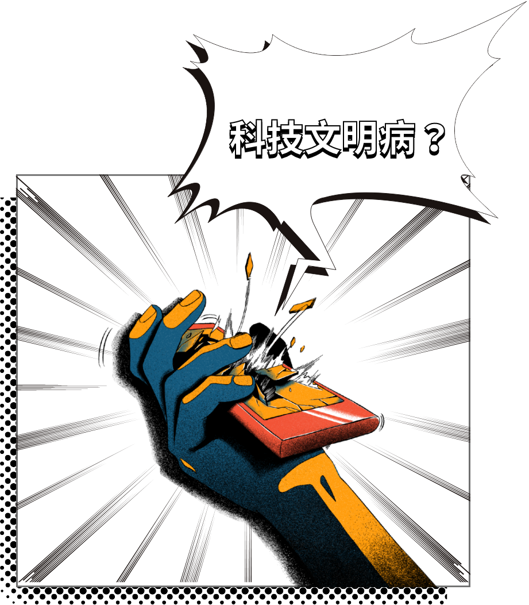
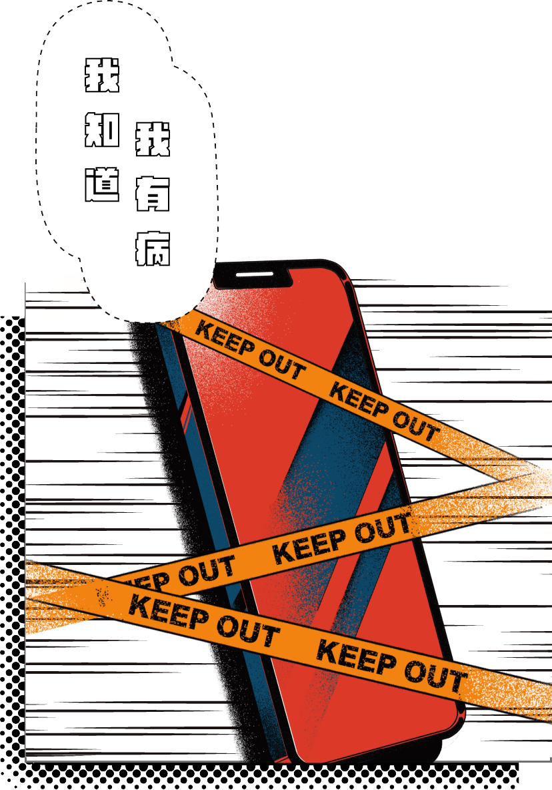
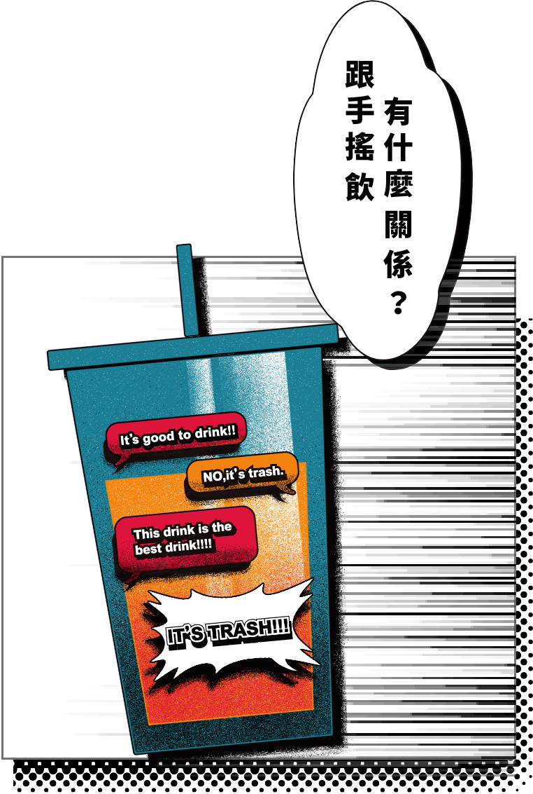

科技文明病是什麼？
你會不自覺的一直拿出手機確認訊息嗎？如果沒有新的訊息是不是會感到有點焦慮呢？如果是的話，很有可能就有科技文明病喔！

所以...我有病嗎？
有這樣的疑惑嗎，那就快點來測試看看吧！通過小測驗，我們會告訴你你有沒有科技文明病，以及你的文明病程度及傾向。

我們認為「病識感」是很重要的。希望透過這樣的形式讓大家了解科技文明病，並且希望讓大家知道「有病」並不是什麼丟臉的事，首先要知道自己有病，才會去找方法克服。
我們希望透過手搖飲料這項載體讓這個議題更加能夠貼近大家，希望能讓大家在了解科技文明病的過程中，得到一些慰藉。
